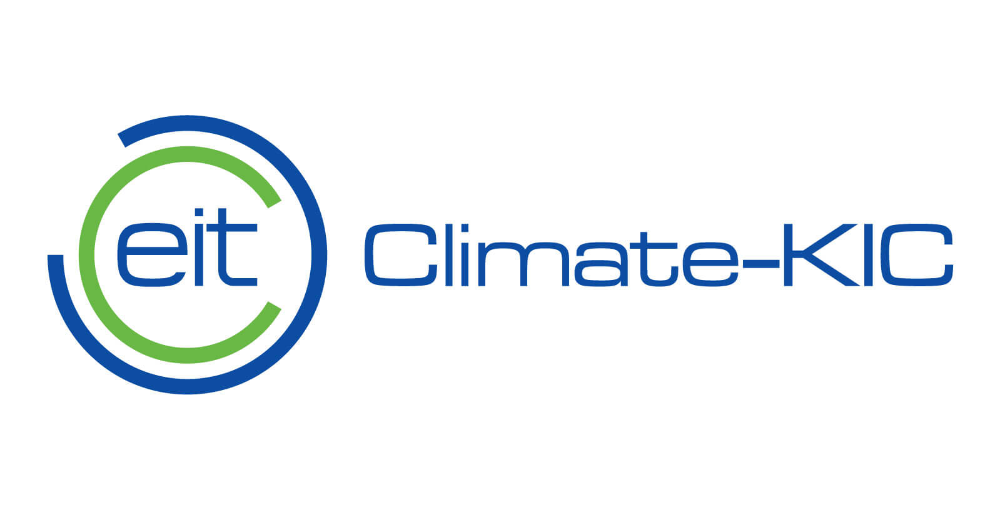
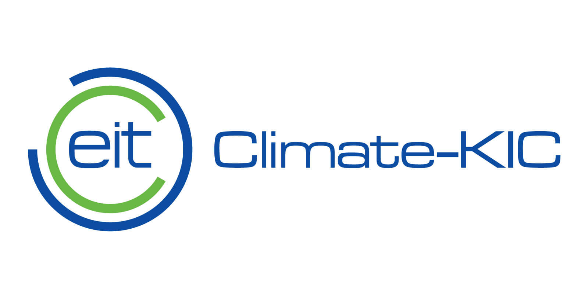

Endorsed by
Certified Professional is an initiative of Climate-KIC, Europe’s largest public-private innovation partnership focused on climate change, consisting of dynamic companies, the best academic institutions, and the public sector.
Certified Professional is an initiative of Climate-KIC, Europe’s largest public-private innovation partnership focused on climate change, consisting of dynamic companies, the best academic institutions, and the public sector.
back
From the moment of registration you will have four weeks to complete and submit your application. To start with you will need to provide some evidence, such as copies of any higher education degree.
Your application will be stored in your candidate’s profile for you to finalise it and revise it.
Once you submitted your assessor will carefully review the material you selected. If they approve your dossier, you will take part in an interview of approximately 50 minutes.
back
And also, to apply, you must:
Be fluent in spoken and written English, satisfying the criteria for at least level C1 of the Common European Framework of Reference for Languages.
back
Certified Professional will offer three certificates with a focus on future-oriented skills needed to operate on different levels:
Focuses on competencies that are relevant for operating successfully on a level between Entrepreneurship and Accelerating Sustainable Transition. Promoting Sustainable Innovation can address the development of new products, processes, or services or it can have implications for an entire system.
Implies a more detailed level with usually clearly defined boundaries; an organisational unit. Entrepreneurship in a climate change context not only implies novel business solutions, it also incorporates models of social and environmental entrepreneurship. Development and implementation of innovative and sustainable business models is the goal.
back
The certificate addresses any climate innovation professional seeking to increase their profile and reach.
No specific training is required. Please look at the eligibility criteria to see if you are a suitable candidate.
No, there is no mandatory training material. The certificate has been developed to assess a variety of professionals coming from different backgrounds. It is decoupled from any training offer.
This depends on your level of higher education: With no degree we expect you to have the equivalent of at least seven years of full-time working experience in a relevant field.If you have an officially recognized degree equivalent to EQF level 6*, we expect you to have the equivalent of at least three years' full-time working experience in a relevant field. If you completed an officially recognised degree equivalent to the EQF level 7*, you must have at least one year full-time working experience in a relevant field.
We aspire to send out your pilot certificate within two months and one week from your submission at the latest – and no later than four weeks from your interview.
You will meet your assessor for the first time during the online-interview. If you would like to get an idea of who we work with, please have a look at Assessor Profiles. All assessors are experts in the field and have been certified themselves. Further, they underwent a special assessment training, in order to assure objective and fair evaluation of your competencies.
After registring, you will complete the online dossier form, and submit it with all supporting documents and evidence attached. Please note that you are able to save the dossier in your applicant profile and revise it as often as you wish, before submitting it. You will not be able to make any changes, once submitted! Provided the application shows that you are competent in at least three competencies and likely to pass another four through further probing at interview, you will be invited to an online interview of approximately 50 minutes.
It is envisaged that the submission of the material can be achieved in ca. 10 hours. The interview will last ca. 50 minutes. The assessors have up to three weeks to process your application and one week to complete the assessment of your interview. Issuing the pilot certificate and the appraisal will take no longer than three weeks.
We currently certify in English only. To be assessed we require you to speak, write, and understand English fluently (ELPF Level C1). All documents must be submitted in English – official degrees may be translated.
Should any of your documentation be in a language that is not English, please provide us with a brief description of the type of document and the information it conveys.
To qualify for the certificate, you must pass at least 7 of the 9 competencies you selected from the list of competencies in the relevant framework, covering 4 working areas. Assessment will be based on the evidence provided in the application as well as the interview.
The interview will be based on your application and the supporting evidence you submitted. The assessor will ask questions to ascertain whether you meet the requirements for each competency. The interview will focus on the situations that you described in your application. Have a look at the guiding questions for completing the application; this will give you an idea of potential questions and focus areas.
In case of connection issues, you and your assessor must arrange for an alternative meeting. You can request to reschedule the interview through the booking platform, once you can tell there is an issue at the time originally scheduled. If this is not possible, please log the issue with: certifiedprofessional@climate-kic.org
You will receive feedback per competency given by your assessor, as well as a pilot certificate provided you pass.
back